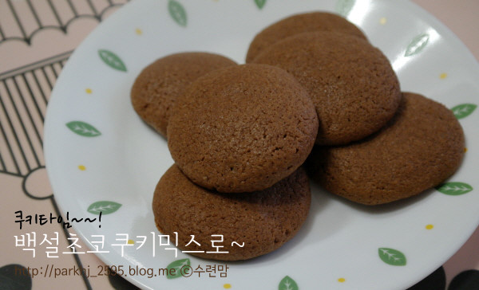
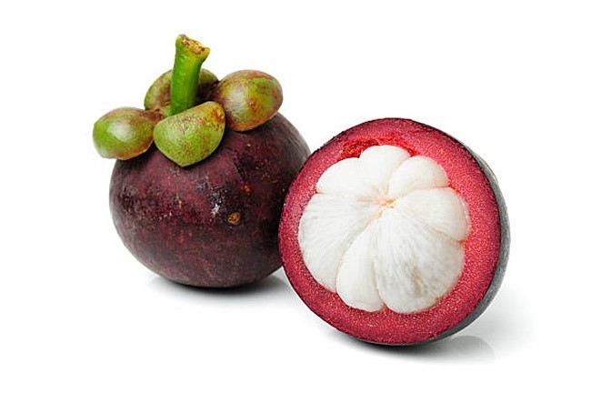

삐롱이
삐롱이는 너무 귀엽다삐롱이는 지가 삐롱이라고 먼저 말 해놓고 팬들이 그렇게 불러주신다라고 말한다.
삐롱이가 된 이유?? 보러가시죠
....
영상이 없네요..
그럼 그냥 착한 어린 삐롱이 일화나 보러가시죠
우리.. 착한 어린 삐롱이...
삐롱이의 손은
쿠키일까?

치즈스틱일까?
크로플일까?
망고스틴일까?

완전 희대의 미스테리이다..
삐롱이는 춤을 ... 잘..(?) 춘다.
아마 깜짝 놀랄거다...
가끔씩 왜저러나.... 부끄럽기도 하다.
하지만.... 그래도 삐롱이 사랑해요♥